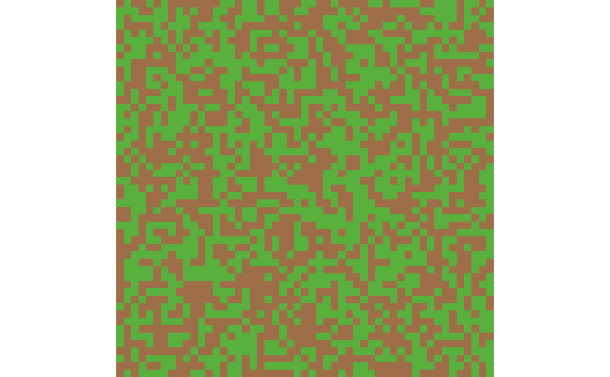
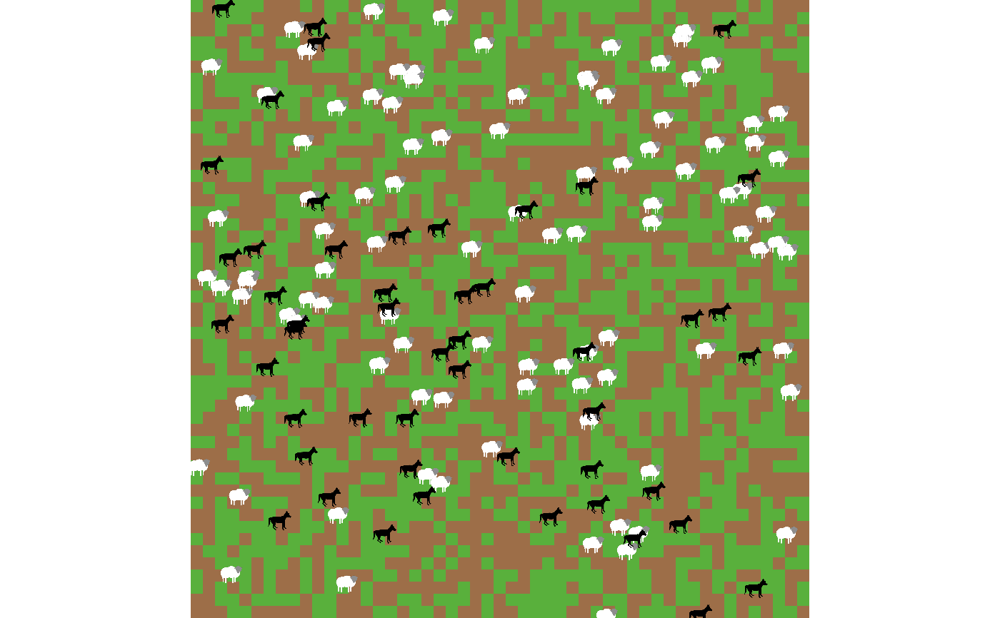

![[Experimental]](figures/lifecycle-experimental.svg)
plot_patches() visualizes the state of NetLogo patches at a specific run
and step. Patches are rendered based on their pcolor attribute, providing
a spatial snapshot of the environment.
This function serves as a foundational layer for NetLogo World
visualizations. Users can extend the resulting plot by adding layers for
turtles, links, or other ggplot2
components to match their specific requirements.
Usage
plot_patches(data, na_value = parse_netlogo_color(7.5))Arguments
- data
A tidy
tibblecontaining experiment results of typelists, as generated byrun_experiment(). This tibble must include the required patch metrics:[pxcor] of patches,[pycor] of patches, and[pcolor] of patches. Refer to the Details section for additional context.- na_value
(optional) A
characterstring indicating and hexadecimal color value to use for patches with missingpcolorvalues (default:"#BFBFBF").
Value
A ggplot2 object representing the NetLogo
world patches at the specified run and step.
Details
To use this function, your experiment must collect specific patch data
and the "lists" output. Ensure the following reporters are included in the
metrics argument of create_experiment():
[pxcor] of patches[pycor] of patches[pcolor] of patches
These metrics must be available within the lists output of
run_experiment().
Examples
# Loading Packages -----
# \dontrun{
library(ggplot2)
library(ggimage)
library(magrittr)
library(stringr)
library(tidyr)
#>
#> Attaching package: ‘tidyr’
#> The following object is masked from ‘package:magrittr’:
#>
#> extract
# }
# Defining the Model -----
# \dontrun{
model_path <- # This model is included with NetLogo installations.
find_netlogo_home() |>
file.path(
"models",
"Sample Models",
"Biology",
"Wolf Sheep Predation.nlogox"
)
# }
# Creating an Experiment -----
# \dontrun{
setup_file <- create_experiment(
name = "Agent Attributes Extraction",
repetitions = 1,
sequential_run_order = TRUE,
run_metrics_every_step = TRUE,
time_limit = 1,
metrics = c(
'[who] of sheep',
'[xcor] of sheep',
'[ycor] of sheep',
'[shape] of sheep',
'[color] of sheep',
'[who] of wolves',
'[xcor] of wolves',
'[ycor] of wolves',
'[shape] of wolves',
'[color] of wolves',
'[pxcor] of patches',
'[pycor] of patches',
'[pcolor] of patches'
),
constants = list(
"model-version" = "sheep-wolves-grass"
)
)
# }
# Running the Experiment -----
# \dontrun{
results <-
model_path |>
run_experiment(
setup_file = setup_file,
outputs = c("table", "lists")
)
#> ℹ Running model
#> ✔ Running model [3.1s]
#>
#> ℹ Gathering metadata
#> ✔ Gathering metadata [15ms]
#>
#> ℹ Processing table output
#> ✔ Processing table output [297ms]
#>
#> ℹ Processing list output
#> ✔ Processing list output [9ms]
#>
#> ℹ The experiment run produced the following messages:
#>
#> Dec 24, 2025 12:16:18 AM java.util.prefs.FileSystemPreferences$1 run
#> INFO: Created user preferences directory.
# }
# Preparing Plot Data -----
# \dontrun{
plot_data <-
results |>
extract2("lists") |>
dplyr::filter(run_number == 1, step == 0)
# }
# Visualizing Patches -----
# \dontrun{
plot_data |> plot_patches()

# }
# Getting Agents Shapes -----
# \dontrun{
turtle_shapes <-
system.file("extdata", package = "logolink") |>
list.files(full.names = TRUE)
# }
# Adding Agents to the Plot -----
# \dontrun{
plot_data |>
plot_patches() +
geom_image(
data = plot_data |>
drop_na(xcor_of_sheep),
mapping = aes(
x = xcor_of_sheep,
y = ycor_of_sheep,
image = turtle_shapes |>
str_subset("sheep") |>
head(1)
),
size = 0.035
) +
geom_image(
data = plot_data |>
drop_na(xcor_of_wolves),
mapping = aes(
x = xcor_of_wolves,
y = ycor_of_wolves,
image = turtle_shapes |>
str_subset("wolf") |>
head(1)
),
size = 0.04
)

# }